AC Electrical Power and Conversion¶
I: AC Systems¶
1: Conventions¶
1.1: Convention for magnetic flux and current¶
-
'X' in circle means into paper.
-
'.' in circle means out of paper.
-
Right-hand (coil) rule can justify the direction of flux generated by current.
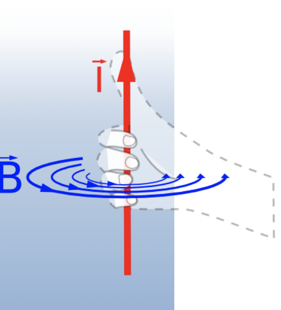
1.2: Structure of Single phase generator¶
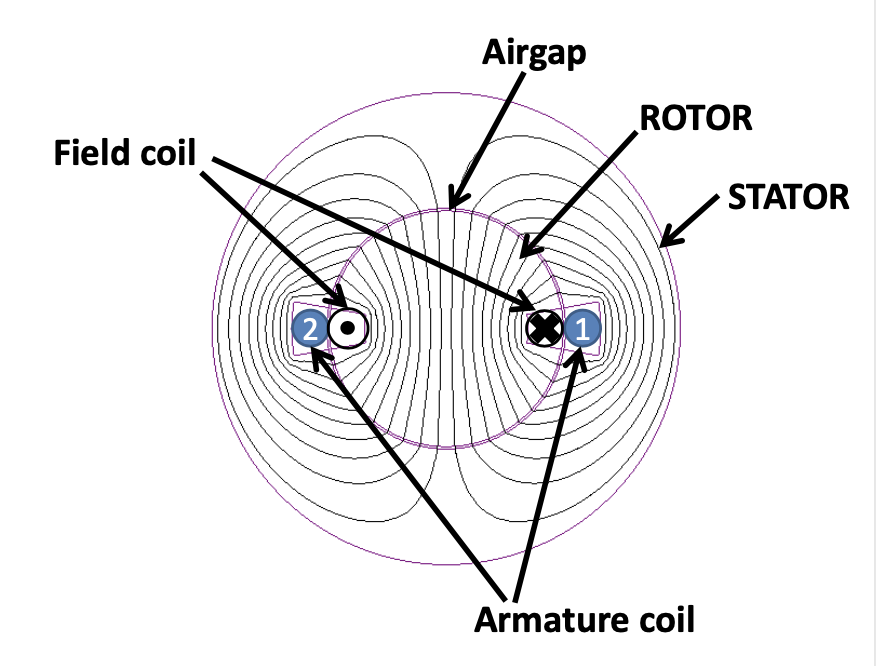
-
The armature coil 1 & 2 in the fixed stators.
-
The filed coil curled out of two different current are in the swirling rotor.
1.3: Flux linkage and induced voltage¶
- The flux linkage \(\psi = N\phi\). We omit the coil number \(N\) at this condition. As:
- If we note that \(i = i_m\cos{(\omega t)}\):
- According to Faraday's Law:
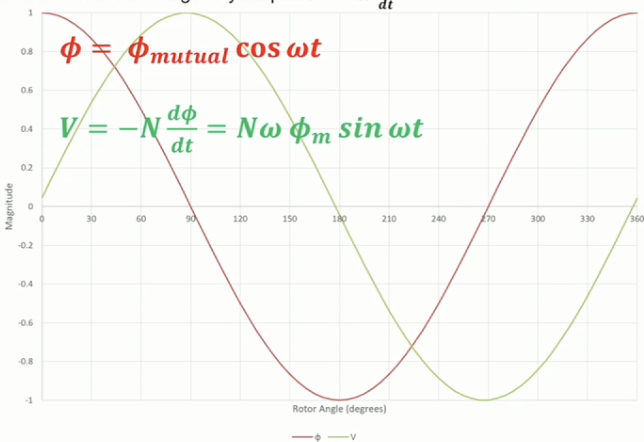
2: AC Phasors¶
2.1: Expression of AC phasor¶
-
For a signal \(f(t) = A\cos{(\omega t + \phi)}\), it can be represented in complex plane as \(F = Ae^{j\phi}\) or \(F =A\angle \phi\)
-
For example of V and I, if is is for a capacitor, which V is lagging the I, the expression would be:
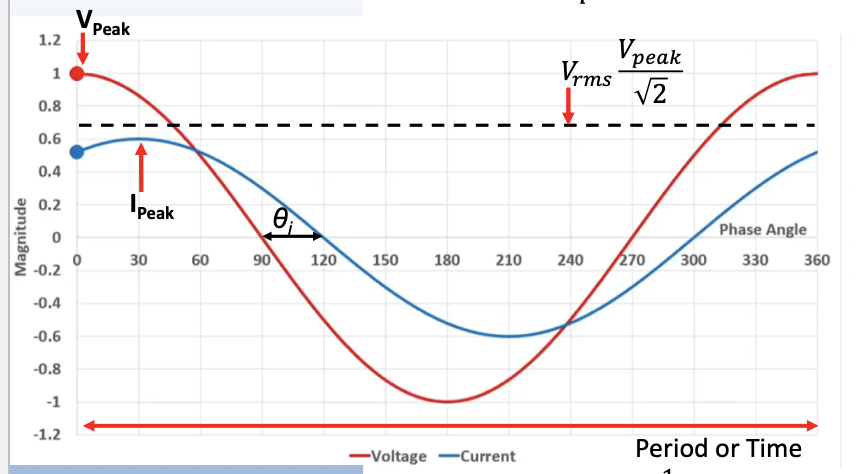
-
Note the reminder tips of capacitor V lagging and inductance I lagging: "CIVIL".
-
Usually take positive angle in anti-cw and take voltage as reference point and lock it to the horizontal or vertical axis.
2.2: Returning phasors to time domain¶
For example, a signal named '\(F=e^{j\phi}\)' in complex domain, to change it back to time domain, we can multiply it by \(e^{j\omega t}\):
This expression can be simplified to:
If we only take the real part:
2.3: AC current, flux and the induced voltage¶
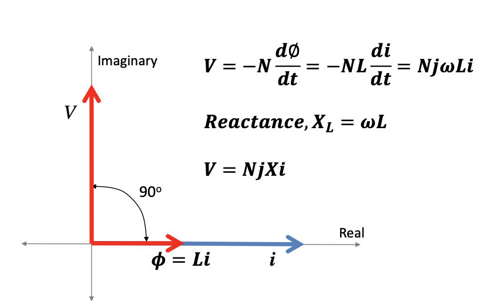
3: Properties of AC Power¶
3.1: Single Phase Power¶
-
Using the sink convention, which power into the load is positive.
-
The instantaneous power flow into circuit is:
- For AC case,
- Bring the V and I together:
- The PULSATING part deliver the active power and the OSCILLATING part deliver the reactance power which just goes back and forth. The stored energy in inductance or capacitor is \(\frac{1}{2}CV^2\) OR \(\frac{1}{2}LI^2\)
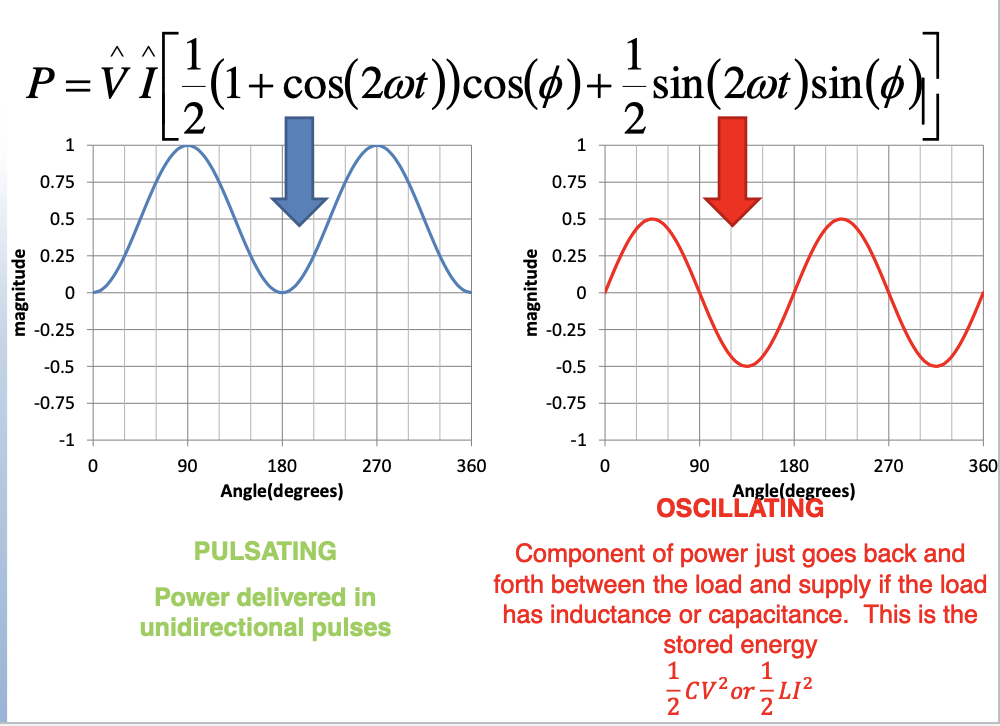
3.2: Complex Power¶
\(\hat{I}\cos{(\omega t-\phi)}\) and \(\hat{V}\cos{(\omega t)}\) can be expressed as:
- So the complex is defined as:
- \(I*\) is called the Conjugate I, which change the imaginary part symbol to "-":
- So the complex power is defined as:
-
The unit of complex power is unit voltamps(VA), the unit of active power is just Watts and the unit of reactive power is Volt-Ampere Reactive (VAR).
-
The power factor is defined using the power triangle:
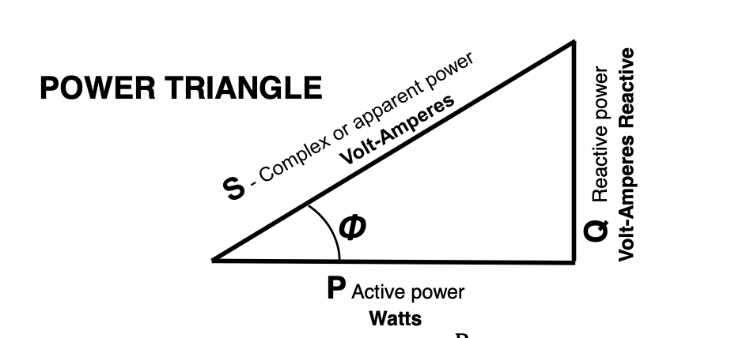
-
\(S = \sqrt{P^2+Q^2}\)
-
\(Q = VI\sin{(\phi)}\)
-
\(P = VI\cos{(\phi)}\)
3.2: Resistance and Impedance¶
-
Compared to \(V=IR\) in DC circuits, Z is used so \(V = IZ\).
-
For a pure resistance, Z = R.
-
For a pure inductance:
\(X_L\) is defined as inductive reactance.
- For a pure capacitance:
\(X_C\) is defined as capacitive reactance.
- Note that the resistance and reactance measured in ohm.
3.3: Power with an Resistive Load¶
-
Voltage and current are in phase, so the \(\phi = 0\) and the power factor is 1.
-
\(P = V_{rms}I_{rms}\)
3.4: Power with an Inductive Load¶
-
Current lags the voltage by 90 degrees according to the calculation.
-
The average power delivered should be '0', and anergy is released then stored each 1/2 cycle.
3.5: Power with a capacitive Load¶
-
Current leads the voltage according to the calculation.
-
The average power is '0'.
3.6: Meaning of Reactive Power¶
-
Reactive power is the power that helps create and sustain the electric and magnetic fields required by alternating current.
-
The reactive power in AC circuit depends on phase angle.
4: Single phase AC to Three phase AC¶
4.1: Single phase¶
- To get more current spread out the winding, we add one pair of coil:
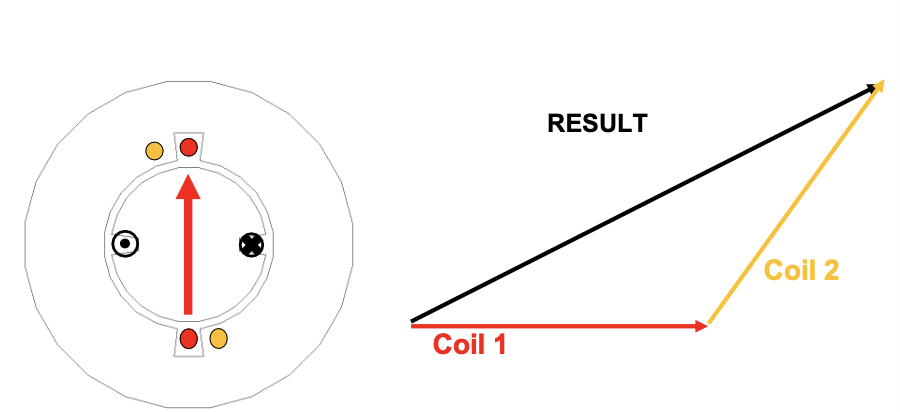
4.2: Simple three phase generator¶
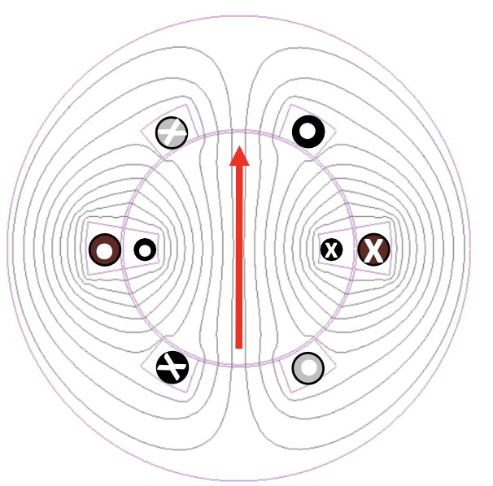 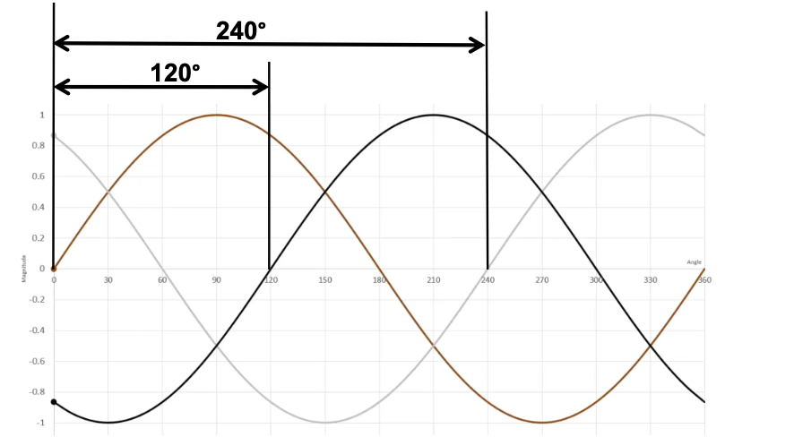 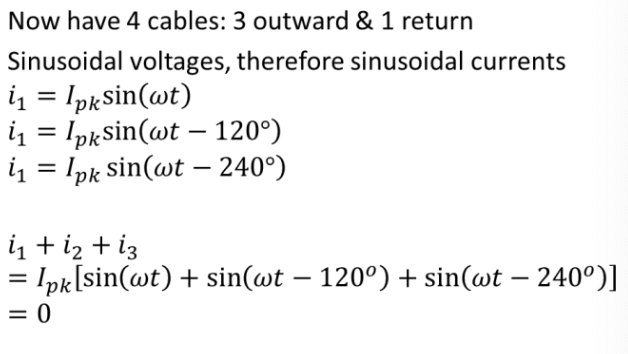
- As \(I_1+I_2+I_3 =0\), the return path can be removed:
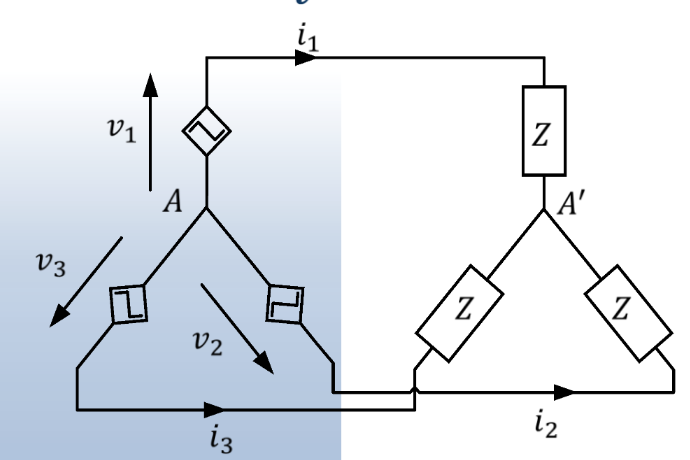
- The three phases using 3 cables and use machine better with 0.96 use factor, compared to single and four phase machines.
4.3: Vector representation of three-phase generator¶
-
\(V = V_{rms}\angle{0}\)
-
\(V = V_{rms}\angle{-120}\)
-
\(V = V_{rms}\angle{-240}\)
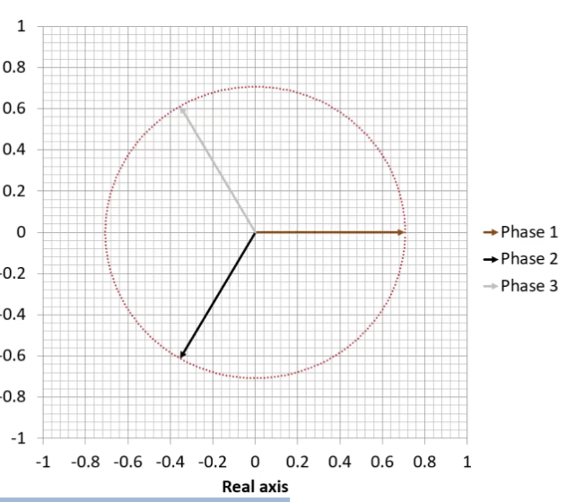
4.4: Star connection to Line connection¶
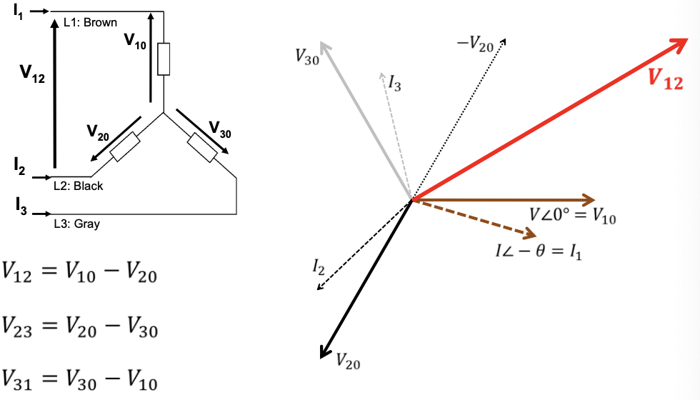
-
Line voltage: measure across two lines.
-
Line current: measure through a line.
- If the phases are the same or balanced:
4.5: Delta connection to line quantities¶
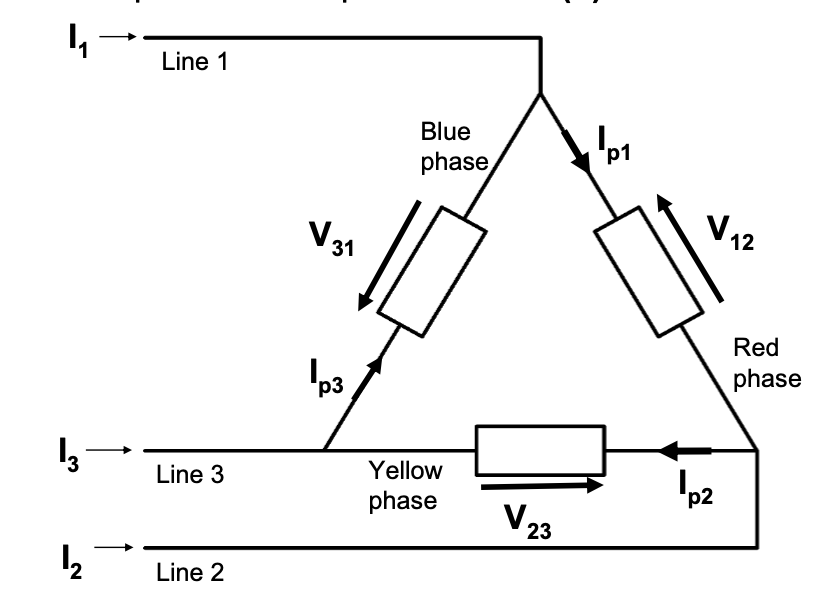
- If all phases are the same or balanced:
4.6: Power in three phase system¶
-
Active Power: \(P = \sqrt{3}V_LI_L\cos{(\phi)}\)
-
Reactive Power: \(Q = \sqrt{3}V_LI_L\sin{(\phi)}\)
-
Apparent Power: \(S = \sqrt{3}V_LI_L*\)
-
Note that by default we use line values and total power (apparent power) with rms value.
4.7: 3 Phase Power Systems¶
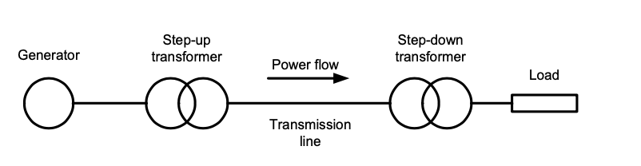
-
Generation: there is a limit on generator voltage (22-23.5 kV)
-
Transmission: Voltage stepped up for efficiency (275/400 kV)
-
Distribution: voltage stepped down for underground cables and safe load.
4.8: Single line representation¶
-
The system is usually balanced if the system is healthy.
-
No need to think of 3 phases, loom at a single phase instead.
-
Assume balanced conditions, i.e. only one phase is used.
-
Large loads are designed to be balanced.
-
Single phase load are distributed evenly to balance the 3-phase load on the grid.
4.9: Per-unit calculation¶
-
Base (reference) value choice:
- Usually base of S and V are chosen and I and Z are derived.
-
The unit of per-unit will be '\(p.u.\)'.
II: Electrical magnetic interaction and VF drives¶
1: Rotor and armature interaction¶
1.1: Field interaction and torque¶
-
The stator and rotor magnetic fields have to be in the correct position and the correct magnitude to create demanded torque.
-
Electrical supply has to be sufficient to create enough speed and torque.
-
Torque has to be sufficient to overcome mechanical resistance, inertia to the required speed.
1.2: 3 phase synchronous machine¶
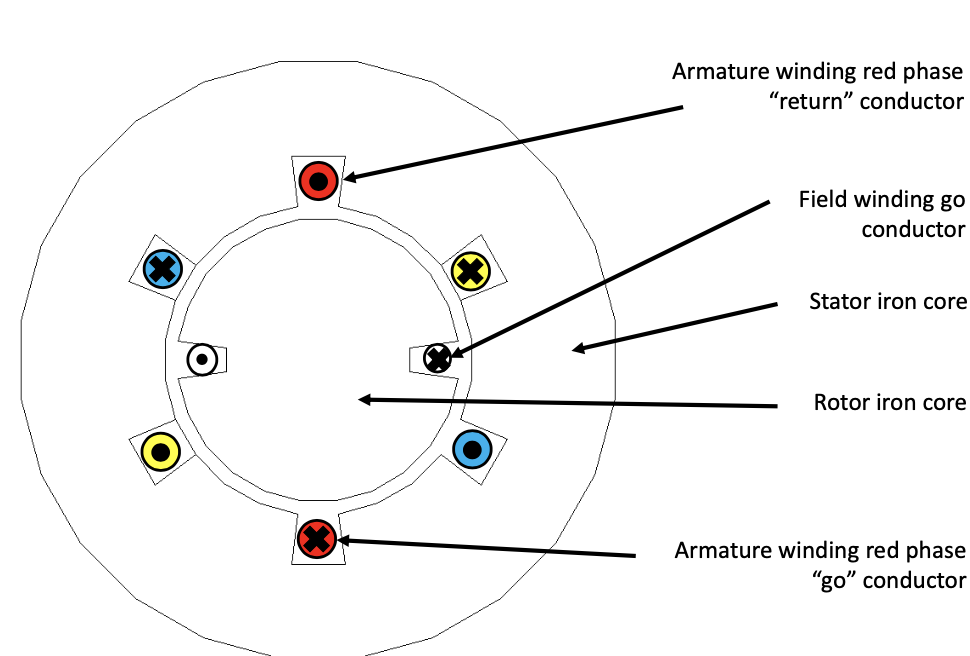
- As the phase shift of 120 degrees between three phases, if we analyses at \(t=0\):
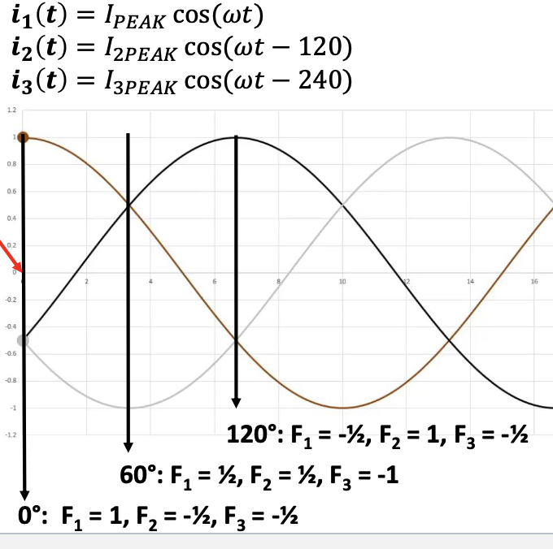
- So we note \(F\) as the magnetomotive force, defined as \(F = NI\):
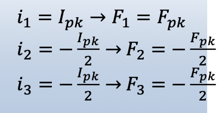
1.3: 3 phase rotating field¶
-
3 stationary pulsating fields sum giving a rotating field constant in magnitude moving forwards at one pole pitch per half cycle.
-
Mathematically expressed as \(\frac{3}{2}\Phi e^{j\omega t}\)
-
A two pole field moves 1 revolution per electrical cycle - 50 Hz means 50 revs/sec.
-
A four pole field rotates 1/2 revolution per electrical cycle.
2: Variable frequency electric drives¶
-
The large efficiency gains should be made when process operate at variable speed.
-
This need a variable frequency and variable voltage, so that requires a variable frequency converter.
2.1: Power Electronics Devices¶
-
Mosfet: Low voltage rating (up to 1.5k), high speed.
-
BJT: largely replaced by IGBT.
-
IGBT: Moderate voltage rating and speed.
-
GTO Thyristor: High V (6k), low speed, used in high power and low frequency devices.
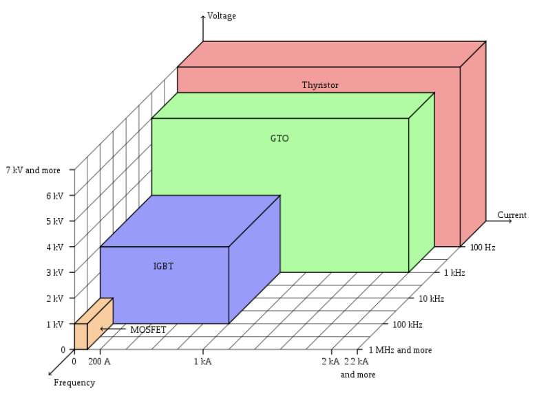
2.2: Chopper controlled DC motor¶
| 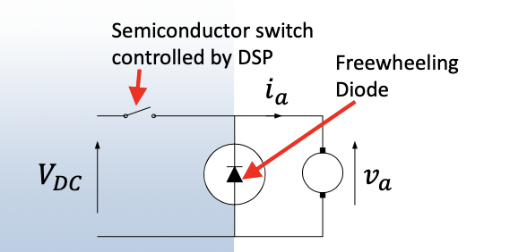 | 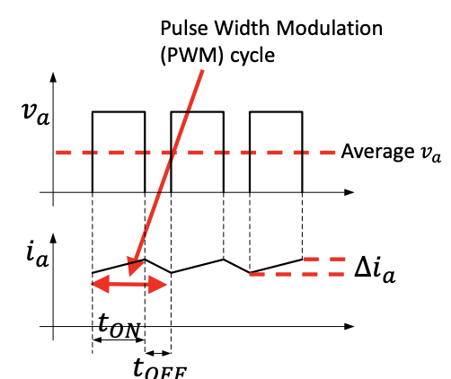 |
|---|---|
-
Switching turning on / off to control the voltage.
-
Voltage across the motor is pulsating.
-
The motor responds to the average voltage.
-
Resistance limits the steady state current.
-
Inductance limits the speed of current rise.
-
The chopper circuit can produce a sine wave if we alter the pulse width dynamically:
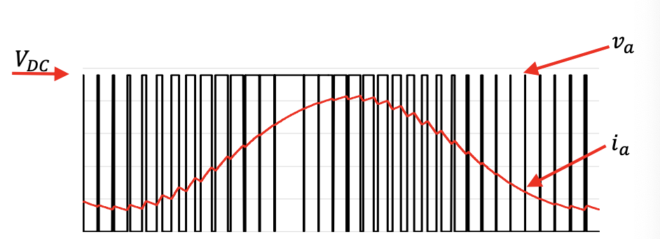
- Apply PWM voltage to the motor winding, the inductance will provide the sin AC current.
2.3: 3-phase voltage source inverter¶
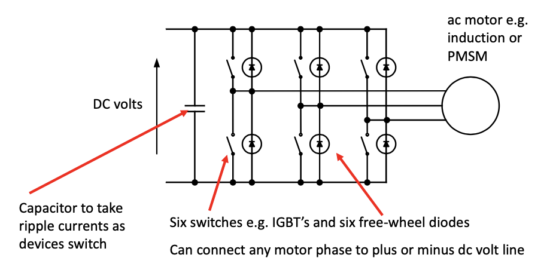
-
The capacitor and diodes can provide the path when the lower side switch connected.
-
The phase connection can be expressed as:
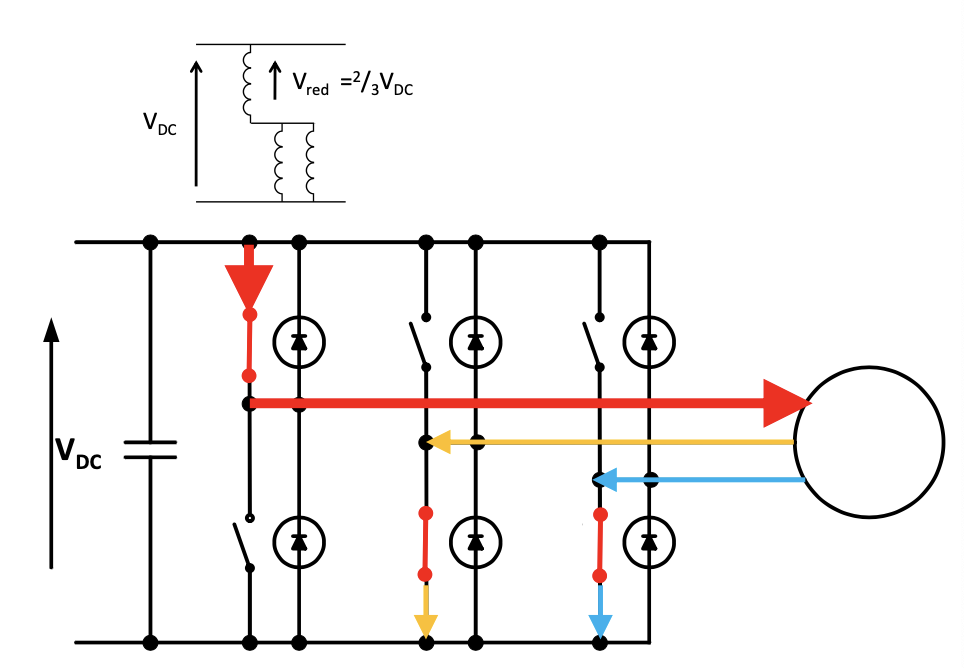
2.4: PWM voltage and current waveform¶
- As the voltage in one phase can be \(\frac{2}{3}V_{DC}\), \(\frac{1}{3}V_{DC}\), 0, \(-\frac{1}{3}V_{DC}\) and \(-\frac{2}{3}V_{DC}\), changing the switch we can get the phase voltage as:
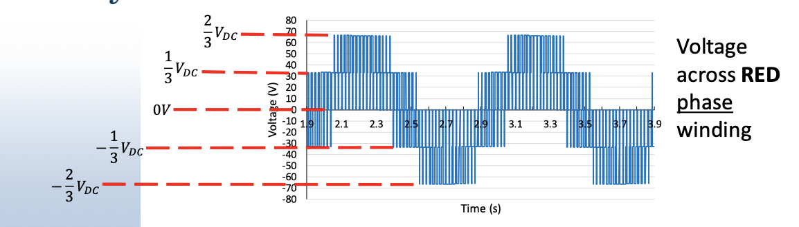
- By altering the modulation signal (change the switch altering frequency) we can change AC frequency.
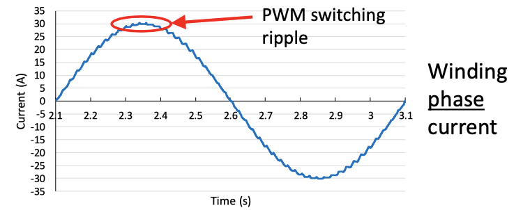
2.5: Sine-triangle PWM (SPWM)¶
- Combine the square wave of triangle wave in high frequency, the modulated sin wave can be produced:
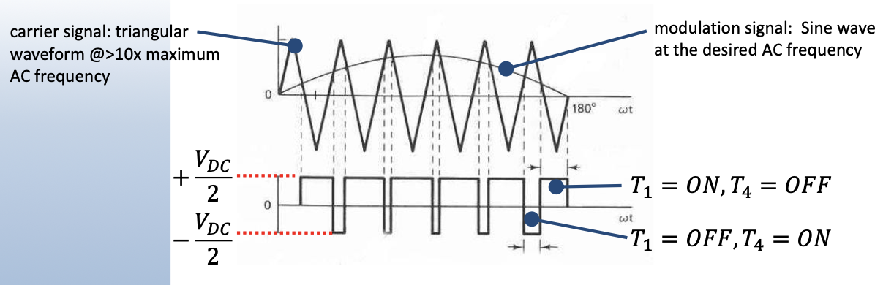
2.6: Implementing PWM in Logic¶
- DSP and micro-controller usually have built in hardware to produce PWM:
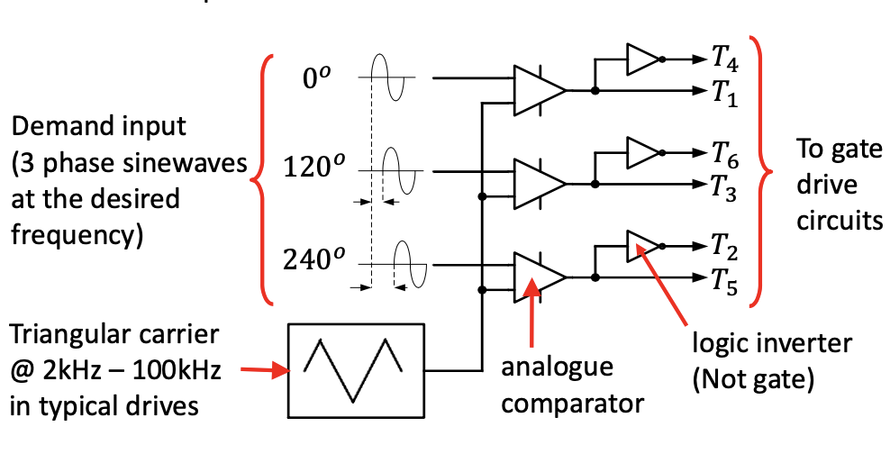
2.7: Shoot-through fault¶
- To avoid T1 and T2 connect at the same time causing the short circuit (shoot-through fault), a small time delay called deadline is inserted by the controller.
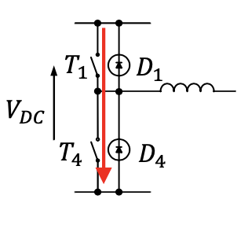
2.8: Variable frequency 3 phase convert Overview¶
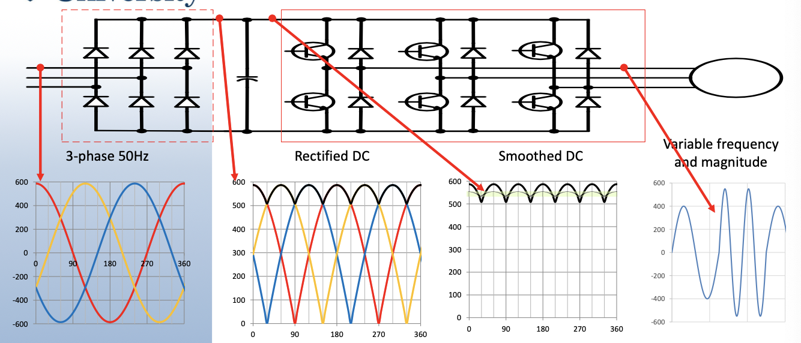